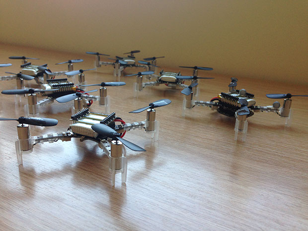

Crazyflie 2.0
The Crazyflie is a quadrotor that is less than 10cm long and weighs only 27 grams. The tiny size of the Crazyflie means that we can fly many of them in a small space and that we can safely fly them around people. We currently have 6 Crazyflies.
